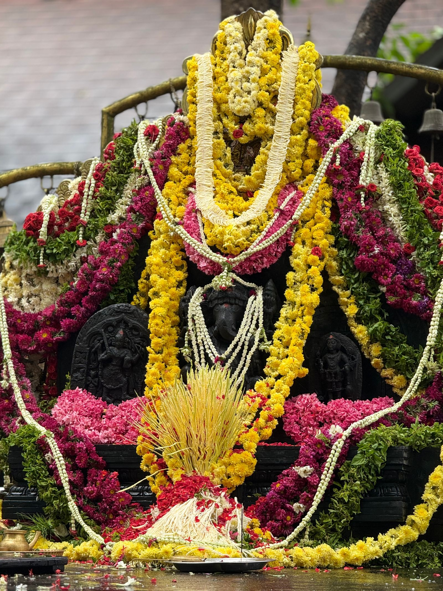
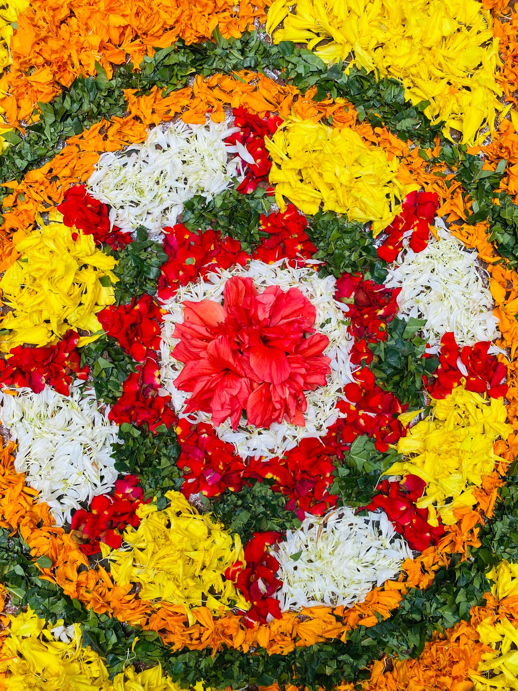

Madurai · East Masi Street · Chithirai Season
Garlands strung before the city wakes.
I am Selvi Natarajan. I string flower garlands by hand at Stall 14 in Madurai's flower market — Madurai malli jasmine, marigold, tuberose and paneer rose — for weddings, for the Chithirai festival at the Meenakshi temple, and for the small daily pooja that starts a house's day. Every garland on this page was bought at dawn and strung the same morning.

Fresh off the string
Six pieces from recent mornings. The price is always the same arithmetic: the foot counts the work, the flower counts that morning's market price.
Hung in rows so the air moves through them. A piled marigold sweats and browns by noon; a hung one holds till evening.
Jasmine is bought as closed buds at 4 a.m. and strung tight; the flowers open on the string, in the evening, where they are worn.

A wedding pair must survive forty minutes of ceremony and an hour of photographs in May heat. Lotus buds are strung last, at 4 p.m., never in the morning.

Temple garlands are strung looser than wedding ones — the flowers must breathe against warm stone and lamp heat.
I buy roses half-open. A fully blown rose drops its petals on the bride's shoulder before the garland exchange is done.

Not every order is strung. For Onam I sell petals by the kilo, sorted by colour into banana-leaf trays the night before.
The order planner
Garlands are priced by the foot and the flower, because a foot of jasmine is 65 buds and sixteen minutes of my fingers, while a foot of marigold is 45 flowers and ten minutes. The table below is the whole price list — the planner only does its arithmetic.
| Flower | Flowers per foot | Stringing per foot | Price per foot | Strung best for |
|---|---|---|---|---|
| Marigold (saamanthi) | 45 | 10 min | ₹80 | Temple strings, doorways, festival rows |
| Jasmine (Madurai malli) | 65 buds | 16 min | ₹150 | Hair strings, pooja, wedding white |
| Tuberose (sambangi) | 26 | 14 min | ₹130 | Evening functions, reception garlands |
| Rose (paneer) | 22 | 18 min | ₹200 | Varmala pairs, honoured guests |
Work out your order
Stringing starts at 5:30 a.m., after the market run. One pair of hands — mine — strings at most six hours before a ceremony.
Flower- Flowers to buy
- 780 buds
- Total length
- 12 ft of stringing
- Stringing time
- 3 h 12 min
- Ready by
- 9:02 a.m.
- Total
- ₹1,800
Delivery inside Madurai city is ₹150, and free on orders above ₹2,000. Wedding pairs are priced from this same table, times two, with the exchange-hour delivery included.
Three mornings' work
Every commission is a race against a flower's clock. The full stories are on the work page.
108 garlands for Chithirai
Asked
A temple committee needed 108 marigold garlands hung before the 6 a.m. procession.
Strung
Ordered two days ahead; four of us strung across two dawns, mine the checking hands.
Outcome
All 108 hung by 5:40 a.m.; none wilted before the procession came home.
A varmala pair that outlasted the heat
Asked
A pair that would hold through a forty-minute exchange and midnight photographs.
Strung
Lotus buds strung at 4 p.m., kept in banana leaf, misted twice, delivered ninety minutes before.
Outcome
Exchanged at 7:20 p.m.; the buds were still firm in the last photograph.
“The garlands went on at half past seven and my daughter's photographs at midnight show them fresh as morning. Selvi told us the lotus would hold. It held.”
Petals for an Onam pookalam
Asked
A Malayali association needed 14 kg of loose petals in five true colours by 7 a.m.
Strung
Nothing strung — petals picked at dawn, sorted into banana-leaf trays by colour.
Outcome
The pookalam was laid by nine; the colours were still bright at the sadhya.
One garland's morning
A garland is perishable work. This is the timetable every order on this page has already lived by.
The market run
Buying by the basket while the lots are still cool. Jasmine after rain is refused at the stall, whoever grew it.
Sorting
Thorns stripped, blown flowers culled, buds graded. What is culled goes to the petal trays, never onto a string.
Stringing
On banana fibre for temple work, thread for hair strings. The knot is a cross-stitch that lets the flower breathe.
Leaf and mist
Wrapped in banana leaf, misted once, carried — never boxed, never refrigerated. Jasmine browns in a fridge.